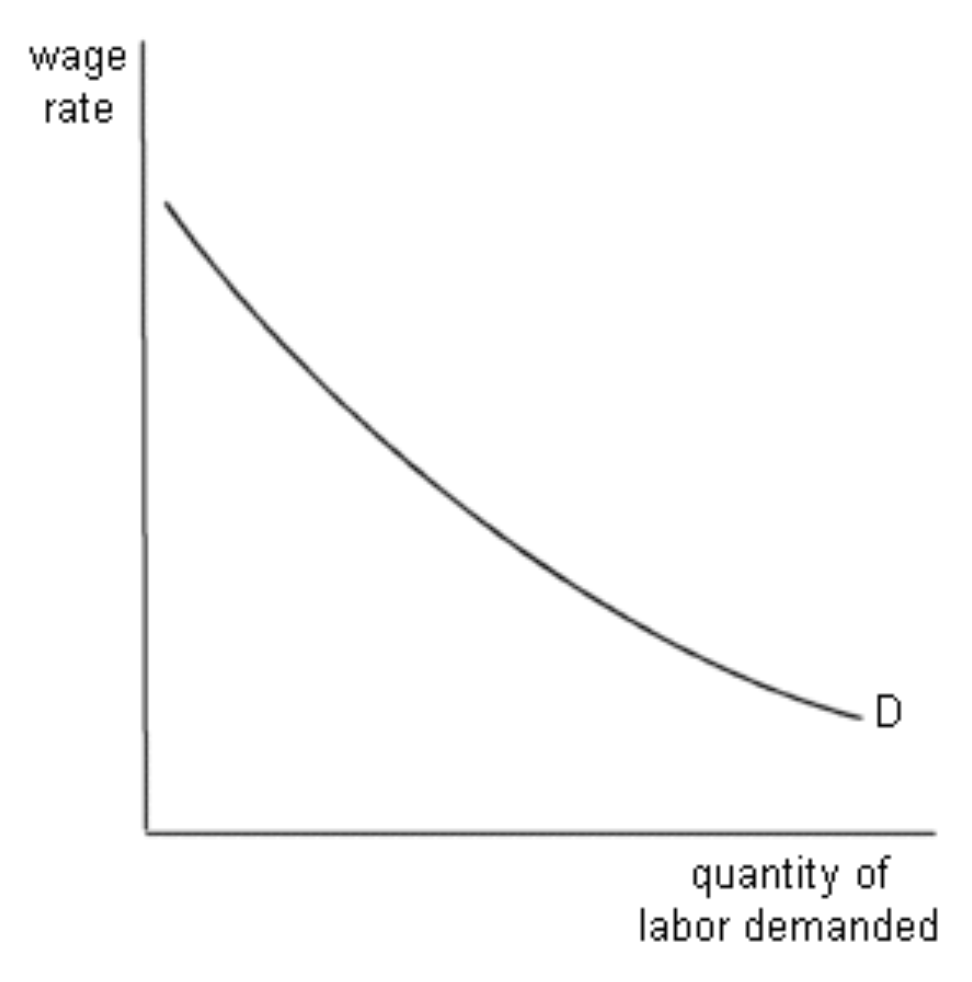
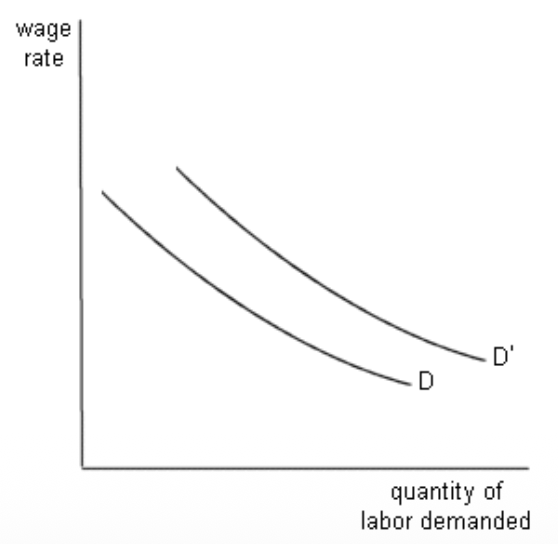
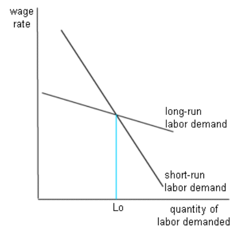
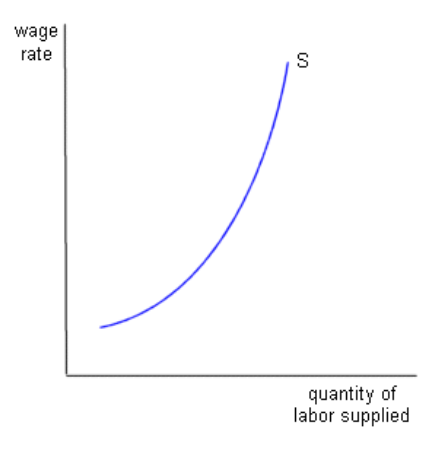
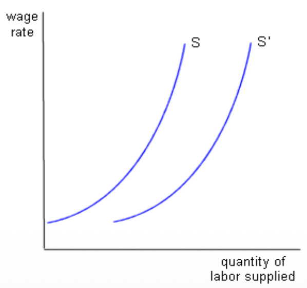
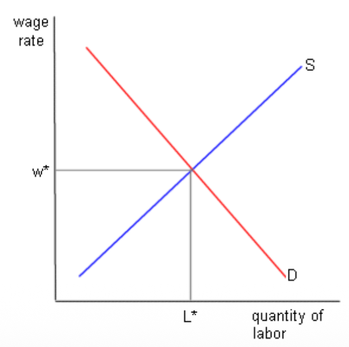
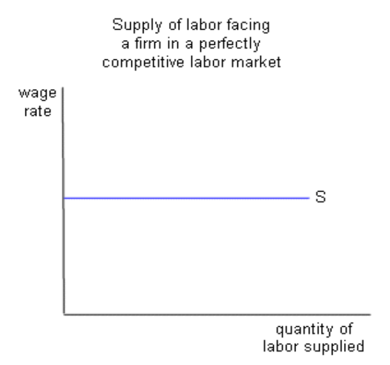
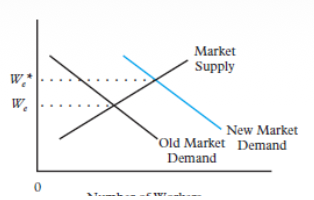
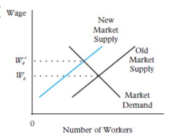
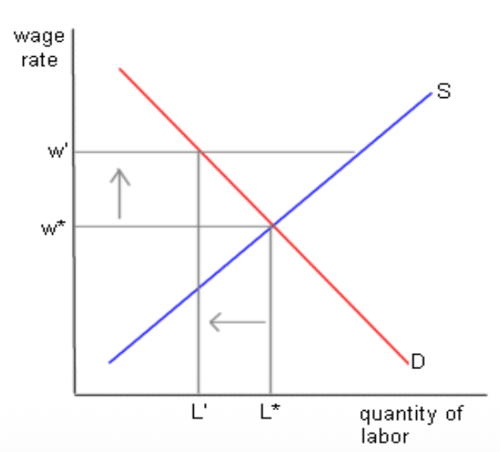

Labour Market Dynamics & Equilibrium
🏭 I. Labour Demand Theory ($L^d$)
Firms' demand for labor is a derived demand. This means that no firm hires for the sake of hiring. The level of employment depends entirely on consumer demand for the final product manufactured by the firm.
1. The Slope of the Demand Curve
The labor demand curve ($L^d$) is downward sloping with respect to the wage. If the wage ($W$) increases, employment ($L$) decreases. According to neoclassical theory, this strict relationship is explained by the obligatory combination of two fundamental effects:
The Substitution Effect
($\uparrow W \rightarrow \downarrow L, \uparrow K$)
When human labor suddenly becomes more expensive (wage increase), the rational firm will change its production method: it substitutes this now expensive labor with other production resources that have become relatively cheaper. Typically, it replaces workers with Capital ($K$), such as machines, self-checkout kiosks, or Artificial Intelligence.
The Scale Effect
($\uparrow W \rightarrow \text{Costs } \uparrow \rightarrow P \uparrow \rightarrow Q \downarrow \rightarrow \downarrow \text{All Inputs}$)
The sequence is fatal: (1) Higher wages drive up the firm's total production costs. (2) To maintain its margin, the company must increase the final selling price ($P$) of its product. (3) Faced with a more expensive product, consumers reduce their demand. (4) Selling less, the firm must "scale down" its entire operation, thus reducing output. By decreasing its overall volume, it will use all inputs (capital AND labor) in much smaller quantities.
Graph: The Downward Sloping Demand Curve
The combination of substitution and scale effects guarantees a negative slope on the Labour Demand Curve.

2. Shifts in Labour Demand
A change in wages causes a simple movement along the existing curve. But the entire curve shifts if the external environment or technology changes:
- Product Demand: If the final product suddenly becomes very popular, the firm wants to produce more at any wage level ($\rightarrow$ Shift to the Right).
- Price of other resources: If the price of capital falls drastically, the firm might buy it to replace labor ($\leftarrow$ Shift to the Left) or use it to expand massively and hire more ($\rightarrow$ Shift to the Right). The final effect depends on the strength of the substitution vs. scale effect.
- Technology: The arrival of new computer technology can make certain jobs obsolete (Shift Left) but dramatically increase the productivity of the remaining workers (Shift Right).
Graph: Shifts in Labour Demand

3. Industry vs. Market Demand
Industry Demand
This is the horizontal sum of all $L^d$ curves within the same industrial sector. Ex: Adding the demand from Renault and Peugeot to see the total demand from car factories.
Market Demand
This is the sum of $L^d$ coming from ALL industries for a specific professional profile. Ex: The demand for secretaries includes car manufacturers as well as hospitals or airlines.
Graph: Long-Run vs. Short-Run Demand

📈 II. Market Labour Supply (\( L^s \))
📈 II. Market Labour Supply ($L^s$)
The market labor supply curve (the number of people willing to work) is upward-sloping. At the macro level of a market, higher wages always entice more people to offer their labor. This attraction effect operates on three distinct adjustment "margins" to fill labor needs:
- 1. The Intensive Margin (Those already there): Workers already in this profession choose to work more (they accept overtime to take advantage of the high wage).
- 2. The Extensive Margin (Inter-Market Mobility): Specialized workers from other labor markets notice the profitability of *this* particular market, quit their current company, make the switch, and apply (e.g., a teacher becomes a developer due to exploding developer wages).
- 3. Participation (The inactive step in): Individuals previously categorized as inactive (by choice or circumstance: stay-at-home parents, early retirees, hesitant students) sense the windfall effect. The financial incentive becomes too strong, so they leave inactivity to participate in the Labour Force.
Graph: The Upward Sloping Market Supply Curve

Shifts in Supply
Similarly, supply does not merely slide along its axis. Entire societal and structural phenomena shift the curve to the left or right at any wage level:
- Alternative Opportunities: What if wages collapse in competing sectors? Workers will flock to *our* market out of necessity, increasing the total supply ($\rightarrow$ Shift to the right).
- Changes in Preferences: The rise of Remote Work or better non-financial conditions massively impacts career choices (Shift right), while a sector gaining a bad reputation will see its supply flee ($\leftarrow$ Shift left).
- Pure Demographics: Europe faces an aging population (mechanical drop in $N_{15-64}$), which restricts supply to the left, sometimes temporarily offset by immigration flows.
Graph: Shifts in Labour Supply

⚖️ III. Equilibrium & Firm Behavior
1. Market vs. Individual Firm (The "Wage Taker")
In perfect competition theory, there is a world of difference between the Market taken globally... and the isolated small firm.
At the Market Level: This is the pure confrontation of upward-sloping total supply and downward-sloping total demand. Their dictatorial intersection determines the Going Wage, a "Market-clearing wage" ($W^*$) with zero unemployment, where no labor shortage exists.
At the Firm Level (The Wage Taker): Faced with this massive ocean of a market, a single firm is just a drop of water. It has absolutely no power to influence or lower wages (otherwise, nobody comes to work for them, as they will go to the millions of other firms). Therefore, from its strict point of view, the labor supply curve appears perfectly and mathematically horizontal (Perfectly Elastic). It can hire 1, 10, or 10,000 workers at the market's "Going Wage" ($W^*$) ... but not a penny less.
Market Equilibrium

Firm as a Wage Taker

2. Shifts in Equilibrium (Comparative Statics)
What happens if an external shock hits the market? The so-called Comparative Statics analysis compares the old equilibrium point ($E_1$) with the new one ($E_2$) once the market has adjusted itself (letting the forces flow freely):
Ex: Economic boom. $L^d$ shifts right. Consequence: Firms aggressively compete for workers. $\rightarrow$ $W \uparrow$ and $L \uparrow$.
Ex: Major recession. $L^d$ shifts left. Consequence: Mass layoffs, remaining candidates lower their wage expectations. $\rightarrow$ $W \downarrow$ and $L \downarrow$.
Ex: Massive wave of worker immigration. $L^s$ shifts right. Consequence: An abundance of labor devalues the price of work. $\rightarrow$ $W \downarrow$ and $L \uparrow$.
Ex: Severe aging or exodus. $L^s$ shifts left. Consequence: Shortage of profiles, firms must pay much more to attract the rare candidates. $\rightarrow$ $W \uparrow$ and $L \downarrow$.
Graph: Shock on Demand

Graph: Shock on Supply

🇪🇺 IV. The "EU Reality": Disequilibrium & Institutions
The neoclassical model seen above assumes perfect flexibility: if demand collapses, wages are supposed to drop instantly to restore full employment. However, this is not what we observe in Europe.
The European reality (unlike the US) is shaped by powerful institutions and non-market forces (laws, unions, labor codes) that strictly hold the wage *above* the natural equilibrium point (Market-clearing level). This creates a fundamental disequilibrium causing an extremely persistent Involuntary Structural Unemployment.
Why does the textbook model fail in Europe?
1. Wage Rigidity via Collective Bargaining
In Europe, wages are almost never negotiated individually, but are fixed "en bloc" via unions:
- Downward Wage Rigidity (Sticky Wages): Even in the midst of a dark crisis where demand ($L^d$) collapses to the left, union or legal agreements forbid firms from lowering hourly wages. The price ($W$) refuses to drop.
- The Quantity Sanction: Since the market cannot adjust via *Prices* (lowering the wage), the entirety of the shock is absorbed by the *Quantity*. Firms, suffocating financially, can only react through mass layoffs or by freezing the hiring of young people completely.
2. Adjustment Costs (Employment Protection Legislation - EPL)
Europe imposes (especially via strict EPL in Italy, France, Spain) heavy penalties and legal complexities for firing a worker (colossal severance pay, months of procedures) with the social goal of "protecting existing employment".
- The Paralysing Effect on Hiring: Paradoxically, making firing unaffordable terrifies businesses when it's time to hire. In the event of a moderate economic recovery, they flat out refuse to sign permanent contracts (CDI).
- Creation of a Dual Market (Dualism): To bypass this legal hurdle on firing fixed costs, European firms abuse "extreme flexibility" by creating a sub-market filled with fixed-term contracts, temp workers, or interns (the secondary market), who serve as disposable fuses during future crises.
3. Skill Mismatch
The simplistic classical model assumes that "labor" is a homogeneous, undifferentiated mass. In the modern economic reality, firms often have many open vacancies but physically cannot hire because the pool of unemployed workers severely lacks the specific skills required (e.g., for tech or artificial intelligence).
Fundamentally, there are multiple disconnected labor markets with separate $L^d$ and $L^s$ curves for each "Skill". Artificially maintaining a high wage does not magically incentivize a factory worker to become a software engineer overnight.
Graph: Impact of Collective Bargaining & Minimum Wage

This graph visually demonstrates the European tragedy: by maintaining politically or via unions the wage (W_min) strictly above the natural equilibrium wage ($W^*$), a permanent gap is created between the Supply line ($L^s$) eager to work, and the Demand line ($L^d$) terrified to hire. This exact massive gap IS Unemployment.
💡 Exam Tip: The Trans-Atlantic Divide (Flexible vs. Rigid)
During essays or comparative questions, always keep in mind the fundamental dichotomy between the American and European systems when facing a negative shock:
- The United States (Adjustment via Prices): The market is violently deregulated. Wages drop dramatically (flexibility), and worker poverty skyrockets (working poors), but people statistically keep a job.
- The European Union (Adjustment via Quantities): The market is hyper-protected by unions and the state. Those who *have* a secure job are extremely well paid and protected (insiders), but the price to pay is that the rest of the population is sacrificed and put into permanent unemployment (outsiders), because firms refuse to recruit at this golden price.